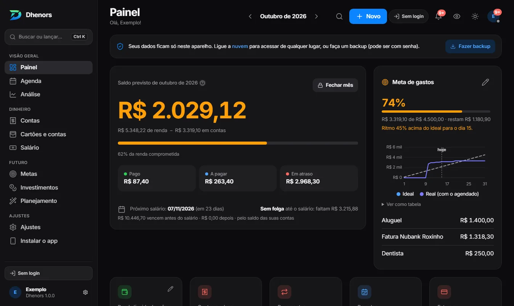
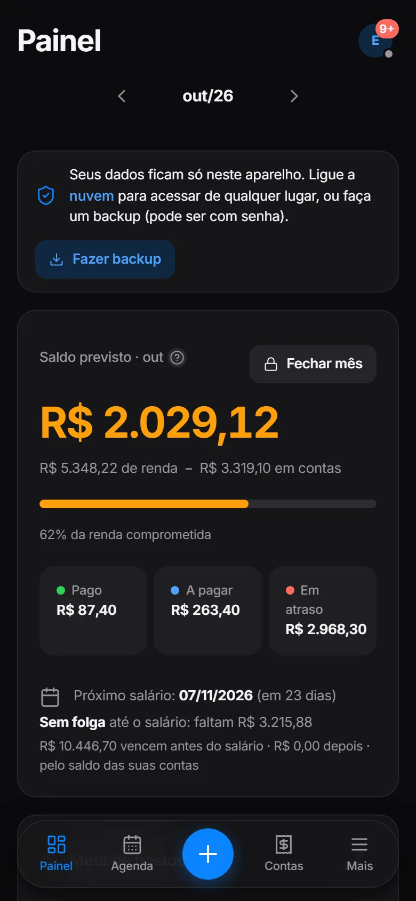
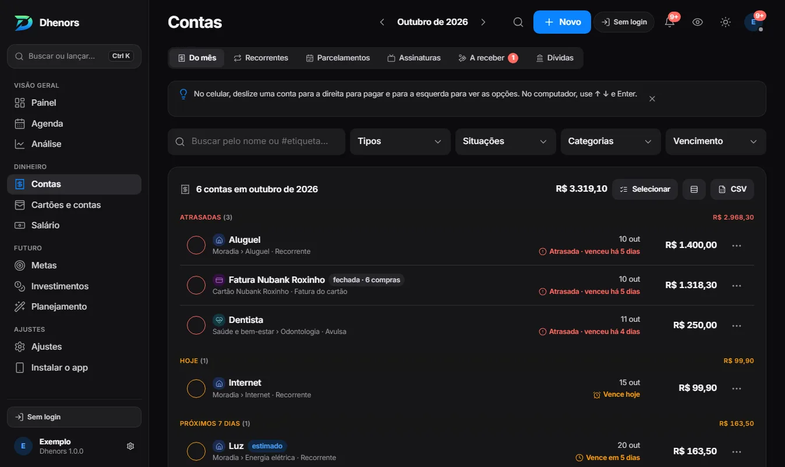
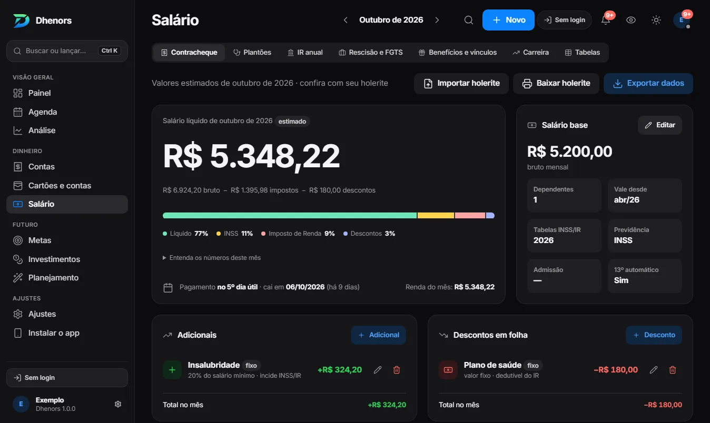
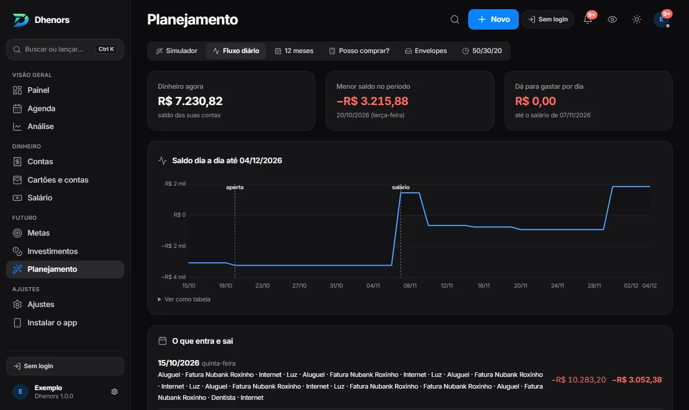
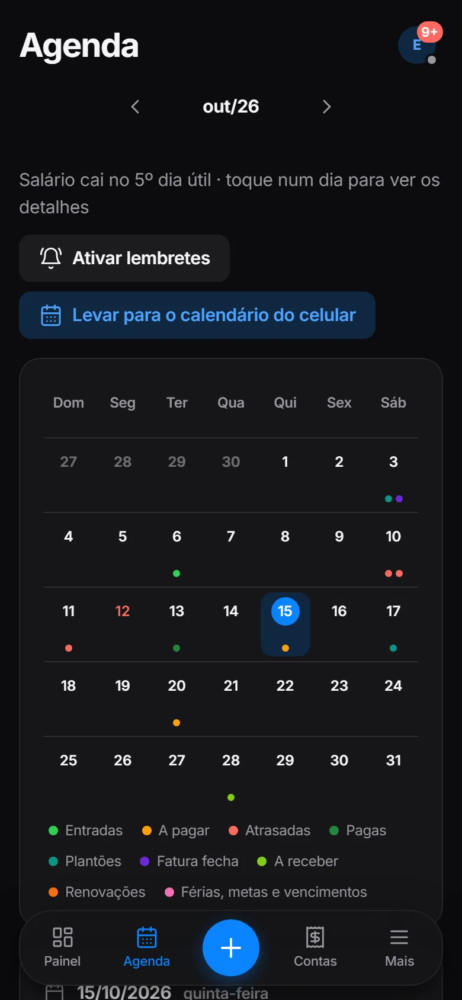

Holerite de verdade
INSS por faixa, IR com a redução de 2026, horas extras com DSR, consignado, férias e 13º. Importe o PDF e confira verba a verba.
O controle financeiro que entende o holerite brasileiro: INSS, IR, plantões, 13º, cartão de crédito, metas e investimentos — no celular e no computador.
Veja o exemplo sem criar conta; para usar com os seus dados, crie a conta grátis no app. Instale no celular pelo navegador ("Adicionar à tela inicial").


Planilhas cansam e os apps gringos não sabem o que é DSR, consignado ou 5º dia útil. O Dhenors sabe.
INSS por faixa, IR com a redução de 2026, horas extras com DSR, consignado, férias e 13º. Importe o PDF e confira verba a verba.
Marque os plantões no calendário e a renda entra sozinha no mês certo, com o líquido já descontado.
Cada compra na fatura certa pelo dia de fechamento. Importe a fatura em PDF ou o extrato: o que já foi lançado é reconhecido.
Renda fixa que rende sozinha, taxas do Banco Central, cotações, proventos, IR na venda de ações e independência financeira.
"Posso comprar?", fluxo de caixa dia a dia, visão de 12 meses com 13º e IPVA, envelopes e regra 50/30/20.
Os dados são criptografados no seu aparelho, com uma frase que só você sabe, antes de irem para a nuvem. O servidor guarda só blocos ilegíveis.



Instale pelo navegador, receba lembretes das contas e anexe a foto do comprovante a cada pagamento.

Sem anúncios, sem rastreadores, sem bibliotecas de terceiros. Código aberto para quem quiser conferir.
0
rastreadores e anúncios
AES-256
criptografia no aparelho, antes da nuvem
0
dados financeiros salvos no navegador
R$ 0
para usar, com a nuvem incluída
Crie a conta, informe o nome e o salário bruto. O resto o Dhenors calcula.